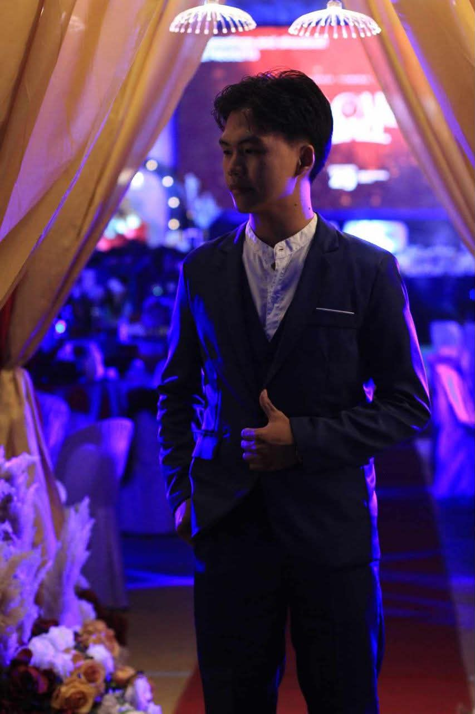

Current
University of Northern Philippines
Bachelor of Science in Computer Science
3rd YearComputer Science Student · UNP
A 3rd-year Computer Science student at the University of Northern Philippines, passionate about technology, creativity, and building things that make an impact.

01 / About
I'm a 3rd-year Computer Science student who enjoys turning ideas into something real through code.
I'm constantly learning, experimenting, and challenging myself to become a better developer. For me, programming isn't just about writing code— it's about solving problems, creating possibilities, and bringing ideas to life.
Years into my
Computer Science journey
Capstone projects
I'm building
Things left
to learn
What drives me
02 / Resume
Current
Bachelor of Science in Computer Science
3rd YearSenior High School
Junior High School
Elementary
Fundamentals of Programming
Intermediate Programming
Data Structures & Algorithms
Object-Oriented Programming
Web System & Development
03 / Selected Work
Capstone Project
A centralized, cross-platform records management and transparency system for the Sangguniang Kabataan. It organizes records, monitors projects, tracks allocated funds and expenses, manages announcements and community feedback, and provides public access to designated SK information.
Digital System
A digital queue system for printing shops designed for UNP students and faculty, helping make the printing process more organized and convenient.
04 / Contact
Have a question or idea? Send a message. I'm always open to learning, collaborating, and connecting.